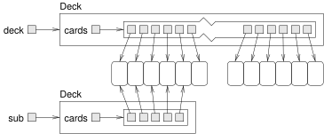
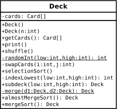

15 Objects of Arrays
In the previous chapter, we defined a class to represent cards and used an array of Card objects to represent a deck. In this chapter, we take additional steps toward object-oriented programming.
First we define a class to represent a deck of cards. Then we present algorithms for shuffling and sorting decks. Finally, we introduce ArrayList from the Java library and use it to represent collections of cards.
15.1 Decks of Cards
Here is the beginning of a Deck class that encapsulates an array of Card objects:
public class Deck {
private Card[] cards;
public Deck(int n) {
this.cards = new Card[n];
}
public Card[] getCards() {
return this.cards;
}
}The constructor initializes the instance variable with an array of n cards, but it doesn’t create any Card objects. Figure 13.1 shows what a Deck looks like with no cards.
Deck object.
We’ll add another constructor that creates a standard 52-card array and populates it with Card objects:
public Deck() {
this.cards = new Card[52];
int index = 0;
for (int suit = 0; suit <= 3; suit++) {
for (int rank = 1; rank <= 13; rank++) {
this.cards[index] = new Card(rank, suit);
index++;
}
}
}This method is similar to the example in Section 12.6; we just turned it into a constructor. We can use it to create a complete Deck like this:
Deck deck = new Deck();Now that we have a Deck class, we have a logical place to put methods that pertain to decks. Looking at the methods we have written so far, one obvious candidate is printDeck from Section 12.6. Here’s how it looks, rewritten as an instance method of Deck:
public void print() {
for (Card card : this.cards) {
System.out.println(card);
}
}Notice that when we transform a static method into an instance method, the code is shorter. Here’s how we invoke it:
deck.print();15.2 Shuffling Decks
For most card games, you have to shuffle the deck; that is, put the cards in a random order. In Section 7.6 you saw how to generate random numbers, but it is not obvious how to use them to shuffle a deck.
One possibility is to model the way humans shuffle; for example, we could divide the deck in two halves and then choose alternately from each one. Humans usually don’t shuffle perfectly, so after about seven iterations, the order of the deck is pretty well randomized.
But a computer program would have the annoying property of doing a perfect shuffle every time, which is not very random. In fact, after eight perfect shuffles, you would find the deck back in the order you started in! For more on this, see https://en.wikipedia.org/wiki/Faro_shuffle.
A better shuffling algorithm is to traverse the deck one card at a time, and at each iteration, choose two cards and swap them. To outline this algorithm, we’ll use a combination of Java statements and English comments. This technique is sometimes called pseudocode:
public void shuffle() {
for each index i {
// choose a random number between i and length - 1
// swap the ith card and the randomly-chosen card
}
}The nice thing about pseudocode is that it often makes clear what other methods you are going to need. In this case, we need a method that chooses a random integer in a given range and a method that takes two indexes and swaps the cards at those positions:
private static int randomInt(int low, int high) {
// return a random number between low and high,
// including both
}
private void swapCards(int i, int j) {
// swap the ith and the jth cards in the array
}Methods like randomInt and swapCards are called helper methods, because they help you solve parts of the problem. Helper methods are often private, because they are used only by methods in the class and are not needed by methods in other classes.
The process of writing pseudocode first and then writing helper methods to make it work is a kind of top-down design (see https://en.wikipedia.org/wiki/Top-down_and_bottom-up_design). It is an alternative to “incremental development” and “encapsulation and generalization”, the other design processes you have seen in this book.
One of the exercises at the end of the chapter asks you to write the helper methods randomInt and swapCards, and use them to implement shuffle.
When you do the exercise, notice that randomInt is a class method and swapCards is an instance method. Do you understand why?
15.3 Selection Sort
Now that we have shuffled the deck, we need a way to put it back in order. There is an algorithm for sorting that is ironically similar to the algorithm for shuffling. It’s called selection sort, because it works by traversing the array repeatedly and selecting the lowest (or highest) remaining card each time.
During the first iteration, we find the lowest card and swap it with the card in the zeroth position. During the \(i\)th iteration, we find the lowest card to the right of \(i\) and swap it with the \(i\)th card. Here is pseudocode for selection sort:
public void selectionSort() {
for each index i {
// find the lowest card at or to the right of i
// swap the ith card and the lowest card found
}
}Again, the pseudocode helps with the design of the helper methods. For this algorithm, we can reuse swapCards from the previous section, so we need only a method to find the lowest card; we’ll call it indexLowest:
private int indexLowest(int low, int high) {
// find the lowest card between low and high
}One of the exercises at the end of the chapter asks you to write indexLowest, and then use it and swapCards to implement selectionSort.
15.4 Merge Sort
Selection sort is a simple algorithm, but it is not very efficient. To sort \(n\) items, it has to traverse the array \(n-1\) times. Each traversal takes an amount of time proportional to \(n\). The total time, therefore, is proportional to \(n^2\).
We will develop a more efficient algorithm called merge sort. To sort \(n\) items, merge sort takes time proportional to \(n \log_2 n\). That may not seem impressive, but as \(n\) gets big, the difference between \(n^2\) and \(n \log_2 n\) can be enormous.
For example, \(\log_2\) of one million is around 20. So if you had to sort a million numbers, merge sort would require 20 million steps. But selection sort would require one trillion steps!
The idea behind merge sort is this: if you have two decks, each of which has already been sorted, you can quickly merge them into a single, sorted deck. Try this out with a deck of cards:
Form two decks with about 10 cards each, and sort them so they are face up with the lowest cards on top. Place the decks in front of you.
Compare the top card from each deck and choose the lower one. Flip it over and add it to the merged deck.
Repeat step 2 until one of the decks is empty. Then take the remaining cards and add them to the merged deck.
The result should be a single sorted deck. In the next few sections, we’ll explain how to implement this algorithm in Java.
15.5 Subdecks
The first step of merge sort is to split the deck into two “subdecks”, each with about half of the cards. So we need a method that takes a deck, and a range of indexes, and returns a new deck that contains the specified subset of cards:
public Deck subdeck(int low, int high) {
Deck sub = new Deck(high - low + 1);
for (int i = 0; i < sub.cards.length; i++) {
sub.cards[i] = this.cards[low + i];
}
return sub;
}The first line creates an unpopulated Deck object that contains an array of null references. Inside the for loop, the subdeck gets populated with references to Card objects.
The length of the subdeck is high - low + 1, because both the low card and the high card are included. This sort of computation can be confusing, and forgetting the “+ 1” often leads to off-by-one errors. Drawing a picture is usually the best way to avoid them.
Figure 13.2 is a memory diagram of a subdeck with low = 0 and high = 4. The result is a hand with five cards that are shared with the original deck; that is, they are aliased.

subdeck.
Aliasing might not be a good idea, because changes to shared cards would be reflected in multiple decks. But since Card objects are immutable, this kind of aliasing is not a problem. And it saves some memory because we don’t create duplicate Card objects.
15.6 Merging Decks
The next helper method we need is merge, which takes two sorted subdecks and returns a new deck containing all cards from both decks, in order. Here’s what the algorithm looks like in pseudocode, assuming the subdecks are named d1 and d2:
private static Deck merge(Deck d1, Deck d2) {
// create a new deck, d3, big enough for all the cards
// use the index i to keep track of where we are at in
// the first deck, and the index j for the second deck
int i = 0;
int j = 0;
// the index k traverses the result deck
for (int k = 0; k < d3.length; k++) {
// if d1 is empty, use top card from d2
// if d2 is empty, use top card from d1
// otherwise, compare the top two cards
// add lowest card to the new deck at k
// increment i or j (depending on card)
}
// return the new deck
}An exercise at the end of the chapter asks you to implement merge. It’s a little tricky, so be sure to test it with different subdecks. Once your merge method is working, you can use it to write a simplified version of merge sort:
public Deck almostMergeSort() {
// divide the deck into two subdecks
// sort the subdecks using selectionSort
// merge the subdecks, return the result
}If you have working versions of subdeck, selectionSort, and merge, you should have no trouble getting this method working. But it is still not very efficient, because it uses selectionSort to sort the subdecks. We can make it more efficient if we use mergeSort instead, but that means we have to make it recursive!
15.7 Adding Recursion
To make mergeSort work recursively, you have to add a base case; otherwise, it repeats forever. The simplest base case is a subdeck with one card. If there is only one card, it can’t be out of order, so we consider it sorted. And if it is already sorted, we can just return it.
And it will turn out to be convenient if we handle another base case, a subdeck with zero cards. By the same logic, if there are no cards, they can’t be out of order. So we consider an empty deck to be sorted, and return it.
With these base cases, a recursive version of mergeSort looks like this:
public Deck mergeSort() {
// if the deck has 0 or 1 cards, return it
// otherwise, divide the deck into two subdecks
// sort the subdecks using mergeSort
// merge the subdecks
// return the result
}As usual, there are two ways to think about recursive programs: you can follow the flow of execution, or you can make the “leap of faith” (see Section 8.4). This example should encourage you to make the leap of faith.
When you use selectionSort to sort the subdecks, you don’t feel compelled to follow the flow of execution. You assume it works because you already debugged it. When you make mergeSort recursive, you just replace one sorting algorithm with another. There is no reason to read the program differently.
Well, almost. You have to think about the base cases and make sure that you reach them. But other than that, writing the recursive version should be no problem. As an exercise at the end of this chapter, you’ll have a chance to finish off this example.
15.8 Static Context
Figure 13.3 shows a UML class diagram for Deck, including the instance variable, cards, and the methods we have so far. In UML diagrams, private attributes and methods begin with a minus sign (-) and static methods are underlined.

Deck class.
The helper methods randomInt and merge are static, because they do not read or write any instance variables. All other methods are instance methods, because they access the instance variable, cards.
When you have static methods and instance methods in the same class, it is easy to get them confused.
To invoke an instance method, you need an instance:
Deck deck = new Deck();
deck.print(); // correctDeck with a capital D is a class, and deck with a lowercase d is an object.
Say you try to invoke print like this:
Deck.print(); // wrong!You get a compiler error like this:
Non-static method print() cannot be referenced from a
static context.By “static context”, the compiler means you are trying to invoke a method in a context that requires a static method.
On the other hand, if you have a Deck object, you can use it to invoke a static method:
Deck deck = new Deck();
int i = deck.randomInt(0, 51); // legal, but not good styleThis is legal, but it is not considered good style, because someone reading this code would expect randomInt to be an instance method.
Another common error is to use this in a static method. For example, say you write something like this:
private static Deck merge(Deck d1, Deck d2) {
return this.cards; // wrong!
}You get a compiler error like this:
Non-static variable this cannot be referenced from a
static context.The problem is that cards is an instance variable, so it is non-static; therefore, you can’t access it from a static method. In general, you can’t use this in a static method, because a static method is not invoked on an object.
For beginners, error messages about non-static context can be confusing and frustrating. We hope this section helps.
15.9 Piles of Cards
Now that we have classes that represent cards and decks, let’s use them to make a game. One of the simplest card games that children play is called “War” (see https://en.wikipedia.org/wiki/War_(card_game)).
Initially, the deck is divided evenly into two piles, one for each player. During each round, each player takes the top card from their pile and places it, face up, in the center. Whoever has the highest-ranking card, ignoring suit, takes the two cards and adds them to the bottom of their pile. The game continues until one player has won the entire deck.
We could use the Deck class to represent the individual piles. However, our implementation of Deck uses a Card array, and the length of an array can’t change. As the game progresses, we need to be able to add and remove cards from the piles.
We can solve this problem with an ArrayList, which is in the java.util package. An ArrayList is a collection, which is an object that contains other objects. It provides methods to add and remove elements, and it grows and shrinks automatically.
We define a new class named Pile to represent a pile of cards. It uses an ArrayList to store Card objects:
public class Pile {
private ArrayList<Card> cards;
public Pile() {
this.cards = new ArrayList<Card>();
}
}When you declare an ArrayList, you specify the type it contains in angle brackets (<>). This declaration says that cards is not just an ArrayList; it’s an ArrayList of Card objects. The constructor initializes this.cards with an empty ArrayList.
Now let’s think about the methods we need to play the game. At the beginning of each round, each player draws a card from the top of their pile. So we define a method to do that:
public Card popCard() {
return this.cards.remove(0); // from the top of the pile
}popCard removes the Card at the beginning of the ArrayList, which we think of as the top of the pile. Because we use ArrayList.remove, it automatically shifts the remaining cards to fill the gap.
At the end of each round, the winner adds cards to the bottom of their pile. So we define a method to do that:
public void addCard(Card card) {
this.cards.add(card); // to the bottom of the pile
}ArrayList provides a method, add, that adds an element to the end of the collection, which we think of as the bottom of the pile.
To know when to stop the game, we have to check if one of the piles is empty. Here’s a method to do that:
public boolean isEmpty() {
return this.cards.isEmpty();
}So far, these methods don’t do very much; they just invoke methods on the instance variable, cards. Methods like these are called wrapper methods because they wrap one method with another.
Finally, to start the game, we need to divide the deck into two equal parts. We can do that with subdeck from Section [subdeck] and a new method, addDeck:
public void addDeck(Deck deck) {
for (Card card : deck.getCards()) {
this.cards.add(card);
}
}addDeck takes a Deck object, loops through the cards, and adds them to the Pile. Notice that it does not remove the cards from the Deck, so the Deck and the Pile share cards. But that won’t be a problem because cards are immutable.
15.10 Playing War
Now we can use Deck and Pile to implement the game. We’ll start by creating a deck and shuffling:
Deck deck = new Deck();
deck.shuffle();Then we divide the Deck into two piles:
Pile p1 = new Pile();
p1.addDeck(deck.subdeck(0, 25));
Pile p2 = new Pile();
p2.addDeck(deck.subdeck(26, 51));The game itself is a loop that repeats until one of the piles is empty. At each iteration, we draw a card from each pile and compare their ranks:
while (!p1.isEmpty() && !p2.isEmpty()) {
// pop a card from each pile
Card c1 = p1.popCard();
Card c2 = p2.popCard();
// compare the cards
int diff = c1.getRank() - c2.getRank();
if (diff > 0) {
p1.addCard(c1);
p1.addCard(c2);
} else if (diff < 0) {
p2.addCard(c1);
p2.addCard(c2);
} else {
// it's a tie
}If the two cards have the same rank, it’s a tie. In that case, each player draws four more cards. Whoever has the higher fourth card takes all cards in play. If there’s another tie, they draw another four cards, and so on.
One of the exercises at the end of this chapter asks you to implement the else block when there’s a tie.
After the while loop ends, we display the winner based on which pile is not empty:
if (p2.isEmpty()) {
System.out.println("Player 1 wins!");
} else {
System.out.println("Player 2 wins!");
}ArrayList provides many other methods that we didn’t use for this example. Take a minute to read the documentation, which you can find by doing a web search for “Java ArrayList”.
15.11 Vocabulary
- pseudocode:
-
A way of designing programs by writing rough drafts in a combination of English and Java.
- helper method:
-
A method that implements part of a more complex algorithm; often it is not particularly useful on its own.
- top-down design:
-
Breaking down a problem into subproblems, and solving each subproblem one at a time.
- selection sort:
-
A simple sorting algorithm that searches for the smallest or largest element \(n\) times.
- merge sort:
-
A recursive sorting algorithm that divides an array into two parts, sorts each part (using merge sort), and merges the results.
- off-by-one:
-
A common programming mistake that results in iterating one time too many, or too few.
- static context:
-
The parts of a class that run without reference to a specific instance of the class.
- collection:
-
A Java library class, like
ArrayList, that represents a group of objects. - wrapper method:
-
A method that calls another method without doing much additional work.
15.12 Exercises
The code for this chapter is in the ch13 directory of ThinkJavaCode2. See page for instructions on how to download the repository. Before you start the exercises, we recommend that you compile and run the examples.
Exercise 13.1. Write a toString method for the Deck class. It should return a single string that represents the cards in the deck. When it’s printed, this string should display the same results as the print method in Section 13.1.
**Hint:* You can use the + operator to concatenate strings, but that is not very efficient. Consider using StringBuilder instead; see Section 10.11.*
Exercise 13.2.
The goal of this exercise is to implement the shuffling algorithm from this chapter.
In the repository for this book, you should find the file named Deck.java. Check that you can compile it in your environment.
Implement the
randomIntmethod. You can use thenextIntmethod provided byjava.util.Random, which you saw in Section 7.6.**Hint:* To avoid creating a
Randomobject every timerandomIntis invoked, consider defining a class variable.*Write a
swapCardsmethod that takes two indexes and swaps the cards at the given locations.Fill in the
shufflemethod by using the algorithm in Section 13.2.
Exercise 13.3. The goal of this exercise is to implement the sorting algorithms from this chapter. Use the Deck.java* file from the previous exercise or create a new one from scratch.*
Implement the
indexLowestmethod. Use theCard.compareTomethod to find the lowest card in a given range of the deck, fromlowIndextohighIndex, including both.Fill in
selectionSortby using the algorithm in Section 13.3.Using the pseudocode in Section 13.4, implement the
mergemethod. The best way to test it is to build and shuffle a deck. Then usesubdeckto form two small subdecks, and use selection sort to sort them. Finally, pass the two halves tomergeand see if it works.Fill in
almostMergeSort, which divides the deck in half, then usesselectionSortto sort the two halves, and usesmergeto create a new, sorted deck. You should be able to reuse code from the previous step.Implement
mergeSortrecursively. Remember thatselectionSortisvoidandmergeSortreturns a newDeck, which means that they get invoked differently:deck.selectionSort(); // modifies an existing deck deck = deck.mergeSort(); // replaces old deck with new
Exercise 13.4. You can learn more about the sorting algorithms presented in this chapter at https://www.toptal.com/developers/sorting-algorithms. This site provides explanations of the algorithms, along with animations that show how they work. It also includes an analysis of their efficiency.
For example, “insertion sort” is an algorithm that inserts elements into place, one at a time. Read about it on the website and play the animations. Then write a method named insertionSort that implements this algorithm.
One goal of this exercise is to practice top-down design. Your solution should use a helper method, named insert, that implements the inner loop of the algorithm. insertionSort should invoke this method \(n-1\) times.
Exercise 13.5. Find and open the file War.java* in the repository. The main method contains all the code from the last section of this chapter. Check that you can compile and run this code before proceeding.*
The program is incomplete; it does not handle the case when two cards have the same rank. Finish implementing the main method, beginning at the line that says: // it's a tie.
When there’s a tie, draw three cards from each pile and store them in a collection, along with the original two. Then draw one more card from each pile and compare them. Whoever wins the tie takes all ten of these cards.
If one pile does not have at least four cards, the game ends immediately. If a tie ends with a tie, draw three more cards, and so on.
Notice that this program depends on Deck.shuffle, so you might have to do Exercise 13.2 first.